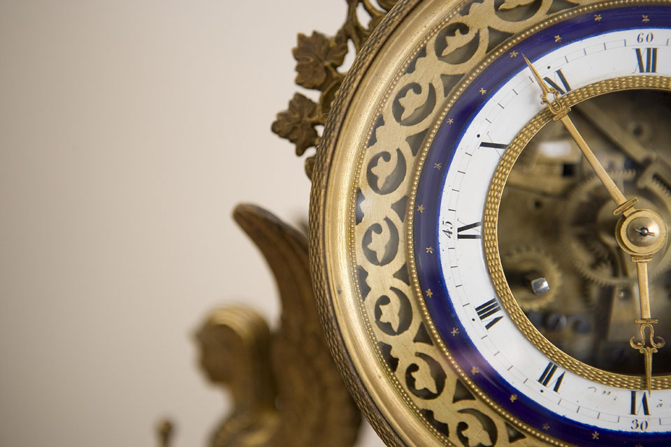
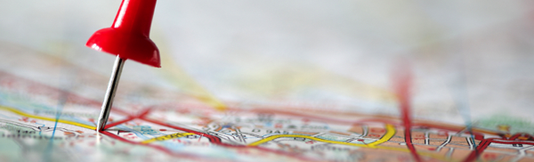

La mia citta
Vivi a Masate
Una città di sogno per i giovani

Vivi a Masate
HOME -
DIVERTIRSI -
CONTATTO
Stai cercando una nuova città dove iniziare una nuova vita ?
Hai appena compiuto 18 anni e vuoi vivere lontano dai tuoi genitori ?
Vivi troppo vicino alla scuola ma vorresti fare 3 ore di pullman al giorno ?
Non cercare più !
Masate è una città ricca di cultura e divertimento, e allo stesso tempo tranquilla con tutte le facilità di una grande città.
In una parola, la città ideale.
Navigazione
La storia di Masate

Il nucleo abitativo sorge su una piccola collinetta dove storicamente era presente la coltura di vite. Veniva infatti prodotto un buon vino bianco decantato anche dal poeta Carlo Porta.
Masate ha una tradizione agricola e poi tessile ed è documentato almeno dall'XI secolo. Il paese durante il medioevo era parte del Comitato della Martesana, e quindi seguì le sorti del Ducato di Milano.
Da questo paese ebbe inoltre origine la famiglia De Maxate, che nel XVIII secolo abitava a Milano e che doveva avere ancora possedimenti in loco.
Approfondire la storia della città di Masate
Localizzazione Masate

Masate è un paese sulle sponde del canale Villoresi e ai confini del Parco del Rio Vallone, immerso nel verde della campagna ma caratterizzato dalla presenza di una crescente fascia di industrializzazione.
Situato fra il Milanese e la Bergamasca, il centro ha saputo mantenere una certa tradizione architettonica di stampo lombardo, sebbene negli ultimi 20 anni si sia registrato l'avanzare della cementificazione.
Approfondimento sulla posizione di Masate
Dati anagrafici
Masate si trova a una ventina di chilometri da Milano, la città la più famosa d'Italia al mondo.
Approfondimento sulla posizione di Masate
Divertirsi a Masate
Masate è un paese che rileva i suoi segreti solo ai suoi abitanti. I segreti sul come divertirsi sono tenuti segreti.
Vedere una lista di cose divertenti da fare a Masate

^ Andare all'inizio della pagina ^
Copyright ©Ivascu